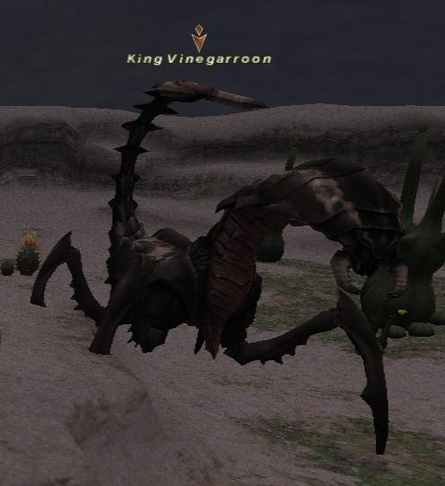

Level 75 reference · Zenith rules
|
Job: Notorious Monster |
 Image source |


|
Zone |
Level |
Drops |
Steal |
Spawns |
Notes | ||||||
|
80-85 |
1 (G-11) |
||||||||||
|
HP = Detects Low HP; M = Detects Magic; Sc = Follows by Scent; T(S) = True-sight; T(H) = True-hearing JA = Detects job abilities; WS = Detects weaponskills; Z(D) = Asleep in Daytime; Z(N) = Asleep at Nighttime | |||||||||||
Notes:
- 21-24 hour Timed Spawn from time of death or depop. Will only pop during Earth or double Earth weather. Can also pop if Earth weather is up prior to the start of it's window and continues over into its window. If no Earth weather occurs between 21-24 hours it can pop after during a following Earth weather.
- Passive NM that will not aggro at all unless you attack it, similar to Vouivre.
- Will despawn if all hate is lost and the weather is no longer Earth or double Earth, similar to Elemental behavior.
- Has Draw In ability that attracts all Alliance members within the zone (similar to the Minotaur in Phomiuna Aqueducts). This is followed by Earthbreaker, Venom Storm or Wild Rage then a single target TP move (Mandible Bite, Death Scissors, or Venom Sting).
- Has high innate Auto Regen that is reportedly more potent at night.
- Special Attacks:
- Has an innate Additional Effect of Petrification on all of its physical attacks.
- Earthbreaker has an Additional Effect of Stun.
- Wild Rage has an Additional Effect of Poison.
- Venom Storm is a very potent Poison (20~30hp/tick).
- Can drop multiple Venomous Claws.
Adapted from Eden Wiki: King Vinegarroon · Contributors and history · CC BY-SA 4.0. Revision 2027. Layout, links and optional background text adapted for Zenith.